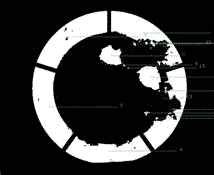
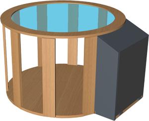

Pigmento is a color experience to enrich learning awareness.
It works by moving a granular material over the surface, which it is projected from inside.
2011, Genova Download [ SCIENCE | BOOKLET | RESUME | PRESS | POSTERS | COLOR SCIENCE | THESIS ]
team
- Giuseppe Burdo
- DESIGN AND LEAD
- giuseppe.burdo[at]gmail.com
- meul.it
- Emanuele Libralato
- CREATIVE TECHNOLOGY
- emanuele[at]gmail.com
- http://tenko.it
- Salvatore Santaniello
- EXHIBIT ILLUSTRATIONS
- lab.santaniello[at]gmail.com
- http://toucis.it
- Achille della Grazia
- EXHIBIT SETUP
- achille.dellagrazia[at]hotmail.it
mentors
- Arch. Cristina Boeri
- COLOUR AND PRODUCT
- Milan Polytechnic University
- coloret.polimi.it
- Prof. Davide Rocchesso
- COMPUTER SCIENCE
- Venice IUAV University
- iuav.it
- Prof. G. Crampton Smith
- Prof. Philip Tabor
- INTERACTION DESIGN
- Venice IUAV University
- interaction-venice.com
institutions
- IUAV
- MILAN POLYTECHNIC
- CNR
locations
- Rome
- Faculty of Engineering
- National Colour Conference
- Venice
- Telecom Italia Future Centre
- European Researcher's Night
- Genoa
- Palazzo Spinola
- National Festival of Science
support
- EPSON, GIORGIO GIRELLI, MARCONATI VETRI, EXPLORA BIOTECH, RETURN INFORMATICA, SCIUTTO EXHIBITIONS
media
- weme, martimex, laweb.tv, branchie
friends
- Francesco Saccone, Luca Mancini, Daniele Muscella, Matteo Moretti, Igor Azteni, Maura Riva, Giorgia Setti
story by Giuseppe Burdo
Team Building
After two months of my thesis presentation, I got an email from Genoa Science Festival saying that someone of the staff would have been calling me shortly. This was Francesca Messina, from National Research Centre (CNR). I was extremely surprised and pleased because I didn't expect it. The main point was to deliver a product, not a prototype. Then I started asking to few friends willing to face the challenge with me. In a very informal way, I met Emanuele Libralato, software engineer based in Venice.
Fundraising
The kickstart came from EPSON, thanks to Carla Conca and team, VP Projections. Meanwhile I had the support from a very good friend of mine, Salvatore Santaniello, specialised in Graphics and Illustration. Beside his very young age, he already was talent enough to have an extensive and professional design experience in all media, including for kids.
Institutional patronage
The tricky part was to make sure people could get what the project was about. We ended up being asked to exhibit also in Venice, along the European Researcher's Night. Beside the IUAV, we were glad to have Cristina Boeri onboard, architect and colour design specialist inside the Indaco Lab, Milan Polytechnic. Pigmento was also guided by the CNR, National Resercher Center, with our reference Francesca Messina, member of the Genoa Science Festival.
Technical development
Processing with the supported OpenCV library were not enough for the computational challenge. Because of prototyping reason, I didn't manage to develop the most complex features, for example different blob filling in the central area. The best candidate now was OpenFrameworks, an open source C++ toolkit with the complete version of OpenCV and OpenGL. Also the setup was now changing with the new devices: the EPSON videoprojector and a professional unibrain camera, combined with a grandangular optics because of the short distance.
- 
Design Development
Few of the renders delivered to Giorgio Girelli, wood professionals in Venice Area. We are extremely grateful for their support in making this happen.
- 
Building
In order to test ideas, it's good to use the quickest possible way. But now pigmento would have been used from many people, especially from kids. So it needed to be robust and precise to keep all the components working well together. The final look and feel was designed according to the Reneissance experience in the main exhibition. This was carefully done by Falegnameria Giorgio Girelli, based in Venice. At the top of the table there was a glass, gently provided by Marconati Vetri.
Scientific presentation in Rome
Pigmento was accepted as long paper in the volume "Colore e Colorimetria", curated by Maurizio Rossi from Milan Polytechnic, published for Maggioli Editore. The two days conference In 2011 was held at Faculty of Electronic and Aerospace Engineering at La Sapienza University, in Rome. Here pigmento had a spot as a poster presentation. Being here was a confirmation about the effort on making the experience truly educational rather than entertaining.
Preview in Venice
The Researcher's night is the annual appointment all over Europe, where University researchers show their projects to the general public. Pigmento was invited from IUAV to give a preview inside the medieval palace owned by Telecom, in the heart of Venice. The space was simply perfect, because of the architecture and the lighting. The aim was to explain what the project was about to adults and to let children play with it.
Main exhibition in Genoa
Genoa Science Festival is the most relevant of the kind in Italy, where hundreds of activities are held within the city of Genoa in several locations. Events span from workshops, lectures, demos, talks and so on. Usually the number of people attending the event are around 300,000 each year about any age. The topic of year 2011 is about "150 and behind" which reminds the Unification of Italy and the guest country is USA.
The National Gallery Spinola was built in 1593 for Francesco Grimaldi in the heart of Genoa and represents one of the most relevant collections for the local area. It was own by the richest family in the city as Pallavicino, Doria, Spinola and there are canvases, wall paintings, interiors and ceramics. Some works include Rubens, Daa Messina, Van Dyck and several other Reinassance artists.
Making colours was considered an art on itw own. Before painting, especially at that time, there was a long process in order to make pigments ready, from mining, to transports and processing. The latter was usually done in the ateliers. On the other side, the theme "150 and beyond" came from the numbers of possible mixed pigments used by Italian painters.
Event
Festival della Scienza, Genova
http://www.festivalscienza.itVenue
Galleria Nazionale di Palazzo Spinola
http://palazzospinola.itWhy Pigmento
Galleria Nazionale di Palazzo Spinola
http://palazzospinola.it
The space
Because of the technical requirements, the location is indoor. The room is usually intended for didactic purposes for school groups after visiting the Museum. The only constraint is about the almost no possible intervention on the walls and ceiling, because of the hystorical importance of the building. Also, it's not possible to work outside normal office hours, which requires a strict schedule on the setup. The area is mainly divided in 2 sides: partecipants involved in the de facto exhibition, and some others on the back for possible workshop activities.
Current Space
Didactic room, Palazzo Spinola
http://www.palazzospinola.itDesigned Space
Didactic room, Palazzo Spinola
http://palazzospinola.it
Art, Science, Play
The hands-on experience is guided by the Festival animators Laura and Adele. The path is designed for any people age. The goal is to discover connections between Art and Science, in light and colour. Those two series of panels are parallel, representing everytime a different point of view. The content is visually explained differently according to people age and experience. From the bottom, with the characted developed by Salvatore Santaniello, to the top relating to the Museum works of art and other details. Main content contributor for the art series is Matteo Moretti.
Representation
Didactic room, Palazzo Spinola
http://www.palazzospinola.it
The Character
Science 1
Savatore Santaniello, All rights reserved Science 2
Savatore Santaniello, All rights reserved Science 3
Savatore Santaniello, All rights reserved Art 1
Savatore Santaniello, All rights reserved Art 2
Savatore Santaniello, All rights reserved Art 3
Savatore Santaniello, All rights reserved